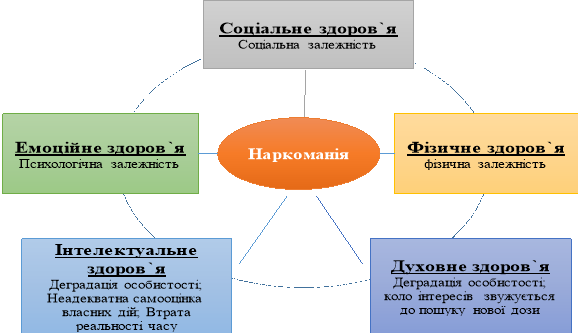

ВПЛИВ НАРКОМАНІЇ
НА РІЗНІ ВИДИ ЗДОРОВ'Я

НАРКОМАНІЯ - Завдає удару по всьому організму!
Наркоманія (грец. narkе — заціпеніння, сон і manіа - божевілля, пристрасть, потяг) - загальна назва хвороб, що проявляються патологічним потягом до постійного вживання в зростаючих кількостях наркотичних препаратів і наркотичних речовин внаслідок стійкої психічної й фізичної залежності від них з розвитком абстиненції при припиненні їх вживання.
Іншими словами – це стан періодичної або хронічної інтоксикації натуральною або синтетичною наркотичною речовиною, що характеризується потягом до даної речовини, а також психічною і фізичною залежністю від ефекту дії цієї речовини.
За даними Управління ООН з наркотиків і злочинності, у світі близько 5% дорослого населення, або приблизно 250 млн осіб у віці від 15 до 64 років, щонайменше один раз вживали наркотики.
Кількість осіб, які класифікуються як наркозалежні, щорічно зростає у пропорції до загальної кількості населення планети. В Україні протягом останніх п'яти років теж спостерігається поступове зростання наркоманії.
Негативні явища, що породжуються вживанням наркотиків, несуть у собі велику небезпеку для людства. Вживання наркотиків насамперед негативно впливає на здоров'я людей, сприяє розвитку соматичних і психічних захворювань і є однією з причин збільшення смертності та інвалідизації населення. При наркоманії вражаються внутрішні органи, виникають неврологічні і психічні розлади, розвивається соціальна деградація.
Крім того, занепокоєння вчених і лікарів викликане поширенням наркоманії, оскільки значна кількість людей, насамперед молоді, недостатньо усвідомлює згубність пристрасті. Поширення наркотиків серед неповнолітніх викликає особливу тривогу: 60% хлопчиків та 20% дівчаток у віці 14-17 років хоча б раз пробували наркотичні речовини. Саме тому дуже важливо вміти помічати та розрізняти ранні ознаки вживання наркотиків, коли проблема ще не набула хронічного характеру і значно легше піддається корекції.
Ранніми ознаками вживання наркотиків, незалежно від виду наркотичної речовини, можуть бути такі зміни у поведінці, характері та фізіології підлітків: безпідставне зникнення з дому на досить тривалий час; пропуск занять у навчальному закладі; зниження успішності в навчанні; різкі зміни у поведінці, що не були властивими раніше; поява брехливості, відчуженості; виникнення боргів; зникнення цінних речей та грошей з дому, крадіжки; втрата зацікавленості до навчання, праці, захоплень; поява таких хімічних речовин, як оцет, питна сода, перманганат калію, йод, ацетон та інші розчинники; знаходження шприців, голок, гумових жгутів, таблеток; поява в лексиконі нових жаргонних слів: баян, машина – шприц; колеса – таблетки; драп, план, дур, ширка – назви наркотичних речовин та ін.; наявність слідів ін'єкцій у будь-яких частинах тіла, особливо на передпліччі; розлади сну та апетиту.
Наявність у підлітків однієї або декількох з вищевказаних ознак не дає підстав для ствердження того, що підліток вживає наркотики, однак це повинно спонукати батьків, вчителів та близьких підлітка звернутися за консультацією до фахівців.